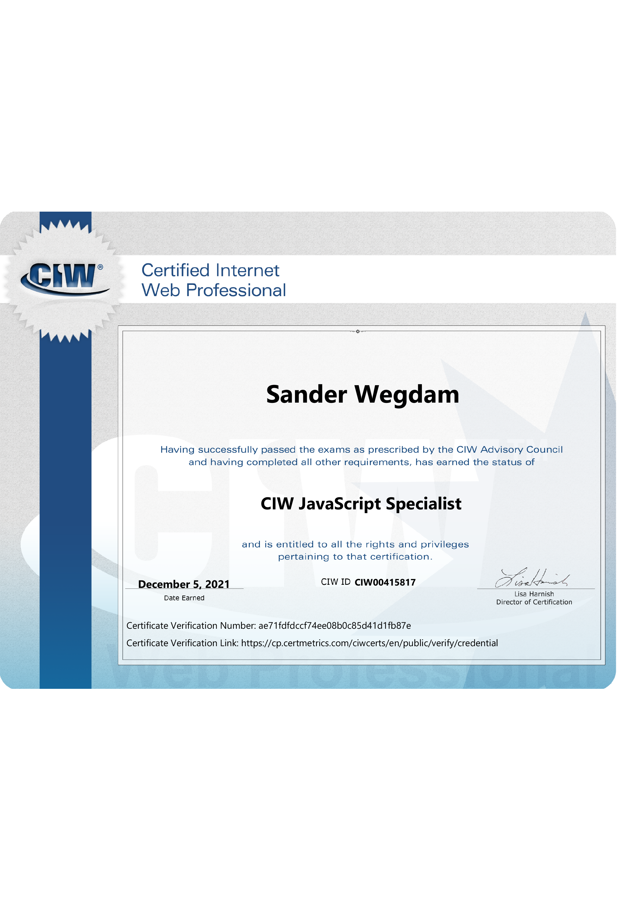
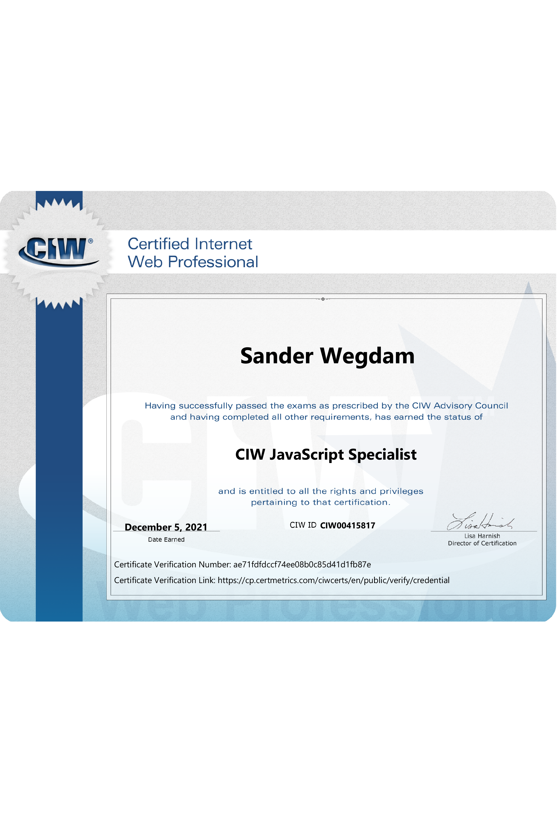

Over mij
Voornaam: Sander
Achternaam: Wegdam
Geslacht: Man
Geboortedatum: 07-04-1989
Adres: Kerkhofweg 193
Postcode: 7586 AD
Woonplaats: Overdinkel
Telefoon: 053-5386708
Mobiel: 06 37605436
E-mail: sanderwegdam@gmail.com
Opleidingen
Vooropleiding 1
Twents Carmel College Losser
Niveau: TGL (Theoretisch Gemengde Leerweg)
Vooropleiding 2
Beeld en Media
Roc van Twente 'De Maere', Enschede
Niveau: MBO
Afstudeerrichting: Mediavormgever (webdesign)
Hoogst genoten opleiding
Informatiedienstverlening en Management Human Information Design & Strategy (HIDS)
Niveau: HBO (Associate Degree)
Instelling: Saxion Hogeschool Deventer
Startjaar: 1e helft 2011
Eindjaar: 2e helft 2014
Werk
Werkervaring - Vaardigheden
| Gegevens | Vaardigheden |
|---|---|
|
2007 - 2008 Stage: SM&C Functie: Mediavormgever / grafisch designer |
Flash animaties produceren en grafisch design, Informatiebeheer en
HTML.
Produceren van interactieve Eindtoets CD's voor de Entree- en Citotoetsen. Flash-animaties, grafische elementen produceren en opzetten in HTML-pagina's. |
| Gegevens | Vaardigheden |
|
2008 - 2009 Stage: RTV Oost |
Webschrijven, webdesign en grafisch design.
Voor RTV OOST heb ik onderhoud gepleegd aan de website Overoverijssel.nl, voornamelijk content updaten. Textberichten werden geplaatst in hun CMS. Overoverijssel.nl is nu Overuit.nl. |
| Gegevens | Vaardigheden |
|
2013 Afstudeeropdracht: Alifa Functie: |
Registratiesysteem bouwen voor urenregistratie.
Voor mijn afstudeeropdracht van mijn opleiding HIDS heb ik voor Alifa welzijnswerk Enschede met studiegenoten een registratiesysteem gebouwd in Excel, waarin de werkuren bijgehouden kunnen worden en uitgedraaid in grafieken. |
| Gegevens | Vaardigheden |
|
2015 - 2019 Vrijwilligerswerk: De Kringloop "Het Ketelhuis" |
Computers up to date maken.
De computers die binnenkomen voorzien van een nieuw besturingssysteem en klaarmaken voor de verkoop. |
| Gegevens | Vaardigheden |
|
2018, 9 mei LOI: "PHP & MySQL Professional" |
Programmeren in PHP met MySQL.
Vooral functionaliteiten van CRUD (Create, Read, Update and Delete) kwamen aanbod, het toevoegen, wijzigen en verwijderen van gegevens uit de database. |
| Gegevens | Vaardigheden |
|
2019, 27 februari LOI: "Programmeren in JavaScript" |
Programmeren in JavaScript.
Het beïnvloeden van de DOM (Document Object Model) en het werken met objecten en functies kwamen aanbod, het toevoegen, wijzigen en verwijderen van gegevens. |
| Gegevens | Vaardigheden |
|
2020, 6 mei LOI: "HBO Front-end Developer - HTML5/CSS3" |
HTML5 elementen en CSS3 technieken toepassen.
Kennis opdoen van HTML5 en CSS3, en de belangrijkste technieken toepassen voor het maken van webpagina’s. |
| Gegevens | Vaardigheden |
|
2020, 3 juli Cursus: "(junior) Software Developer" |
De basis skills van het programmeren leren.
Het traject (voltijd) heeft in totaal ruim 4 maanden geduurd. In C# programmeren, back-end programmeren en werken met (relationele) databases. Front-end programmeren: HTML, CSS, JavaScript, Frameworks (JQuery en Bootstrap) kwamen aan bod. We hebben daarbij samengewerkt in scrumgroepen. |
| Gegevens | Vaardigheden |
|
2020, 10 december LOI: "HBO Front-end Developer - Contentmanagement" |
De principes leren van contentmanagement.
De werking van één contentmanagement- |
| Gegevens | Vaardigheden |
|
2021, 26 april LOI: "HBO Front-end Developer - App design en development" |
Het ontwerpen en produceren van een grafisch prototype van een app die aan een gebruikerstest is onderworpen. |
| Gegevens | Vaardigheden |
|
2022, 20 december - Leerwerktraject |
Via het UWV volgde ik een leerwerktraject, waarbij ik werkte aan opdrachten gerelateerd aan front-end development en mijn studie "Online marketing en adverteren". |
| Gegevens | Vaardigheden |
|
2024, 16 juni LOI: |
Het schrijven van een fictief online marketingplan voor de nieuwe lijn Philips' OLED-televisies, waarbij de inzet van SEO, SEA en adverteren op social media aan bod kwam. |
| Tools | Scripttalen |
|
Visual Studio Code ChatGPT Adobe Photoshop Adobe XD |
HTML5 & CSS3 JavaScript PHP |


 
